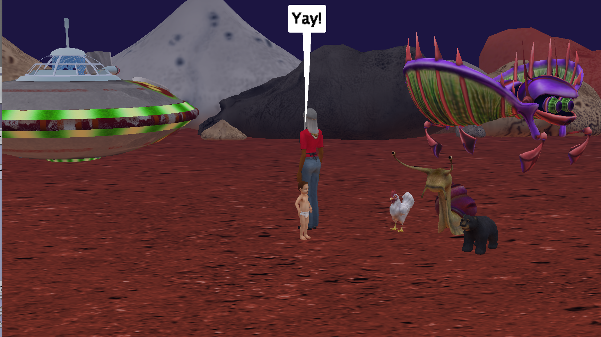
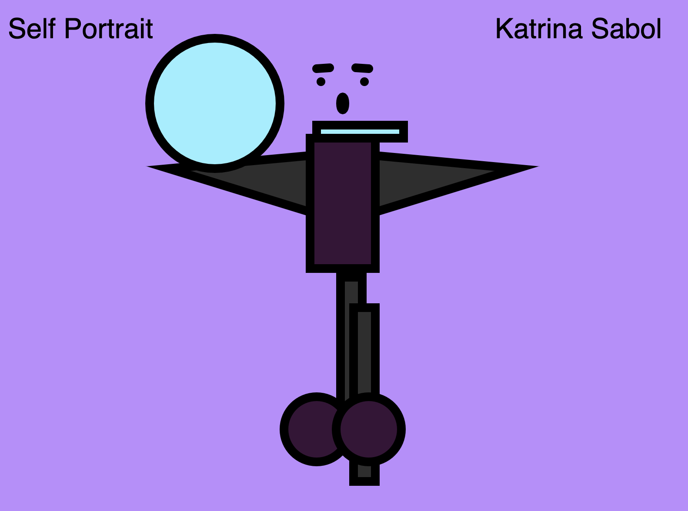
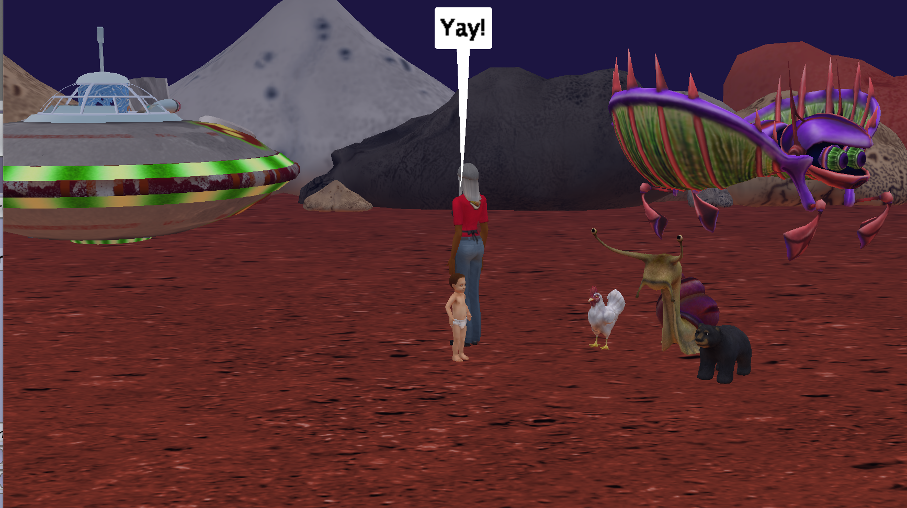
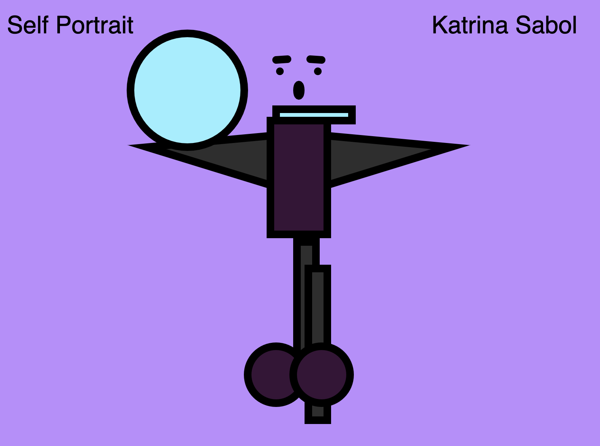

Portfolio
Home
Artwork & a Short Story
Contact Me
Hi! This is a collection of my work over the semester!
The main project I worked on was this website, which you can navigate through using the hyperlinks above.
 This was one of the first times working with code in a manner like this. The assignment entailed
creating a draw function in order to make a cool geometric shape. I chose a floral like pattern
with complimentary pink and purple colors.
This project was fun to do, especially because I chose a sound board to do, which
reminded me of middle school. All of the buttons would play the sound that it says,
and I also gave the option to change the colors of the app background, as well as
the text on the white background one.
This was one of the first times working with code in a manner like this. The assignment entailed
creating a draw function in order to make a cool geometric shape. I chose a floral like pattern
with complimentary pink and purple colors.
This project was fun to do, especially because I chose a sound board to do, which
reminded me of middle school. All of the buttons would play the sound that it says,
and I also gave the option to change the colors of the app background, as well as
the text on the white background one.
 Making this small minigame proved to be difficult in a few ways, however, once
I got the hang of it, it was fairly easy to move from level to level, as most
components stayed constant with the movements and animations. I also decided to
make an end game scene so you would know when the game was over.

In middle school, I did a single project with Alice, but not to this calliber. This was the
first time using if/else statements more complexly, which took a lot of computing to make
sure they work correctly and cooperate with the rest of the statements.
This was probably my favorite project in this class. Getting to draw a funny "self portait"
was interesting to do, especially with code. I learned the importance of ordering in
Visual Studio Code. This project also took a look of calculating, but it payed off
when I correctly put in coordinates and made the picture look well made.

These two screenshots are from when I animated the previous photo above. I used animations
to move certain "body" parts around, both on horizontal and vertical planes. I think this
proved to be one of the more difficult projects this semester, as making sure the limits on
the movement would not run off of the canvas or glitch.
Making this small minigame proved to be difficult in a few ways, however, once
I got the hang of it, it was fairly easy to move from level to level, as most
components stayed constant with the movements and animations. I also decided to
make an end game scene so you would know when the game was over.

In middle school, I did a single project with Alice, but not to this calliber. This was the
first time using if/else statements more complexly, which took a lot of computing to make
sure they work correctly and cooperate with the rest of the statements.
This was probably my favorite project in this class. Getting to draw a funny "self portait"
was interesting to do, especially with code. I learned the importance of ordering in
Visual Studio Code. This project also took a look of calculating, but it payed off
when I correctly put in coordinates and made the picture look well made.

These two screenshots are from when I animated the previous photo above. I used animations
to move certain "body" parts around, both on horizontal and vertical planes. I think this
proved to be one of the more difficult projects this semester, as making sure the limits on
the movement would not run off of the canvas or glitch.